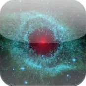

Science news ·
JPL Apps
Desktop Apps
Looking to explore your favorite space images in striking detail or take a virtual trip to Mars? JPL has apps for that. We’re taking all the best JPL science, images and more to bring you applications that’ll keep you informed and entertained no matter where you are.
Eyes on the Earth
View recent data of Earth’s vital signs, follow NASA satellites and learn how they collect critical data about Earth’s atmosphere, land and oceans, and see spectacular views of our home planet from space with this desktop app and visualization tool.
Eyes on the Solar System
Explore the cosmos from your computer with this 3-D solar system full of real NASA mission data. Hop on an asteroid. Fly with NASA’s Voyager spacecraft. See the entire solar system moving in real time. You control space and time in this desktop app and visualization tool.
Eyes on Exoplanets
This desktop app and visualization tool allows you to explore a 3-D simulation, populated from real spacecraft data, of all planets that have been discovered around other stars.
Deep Space Network Now
To keep in contact with the spacecraft exploring our solar system and the universe beyond, JPL operates a network of large radio antennas called the DSN. This online app will let you see what the DSN is up to right now, which antennas are in use, which spacecraft are talking to us, how quickly data is being received, and how long it takes a signal take to get there and back.
Images and Photos

Space Images
Discover, share and explore stunning images and videos of space from NASA’s Jet Propulsion Laboratory — now available for iPhone, iPod Touch, iPad and Android devices.
› Download for iPhone
› Download for iPad
› Download for Android devices
NASA Selfies
Create your own selfies from outer space! NASA Selfies lets you put your photo in a virtual spacesuit in front of some of NASA’s most captivating space images. Share these space selfies on social media, and learn about the science behind the pictures.
› Download for iOS devices
› Download for Android devices
Human activities, a changing climate and natural disasters are rapidly altering the face of our planet. Now, with NASA’s Images of Change iPad application, users can get an interactive before-and-after view of these changes.
Games and Interactives
Spacecraft AR
This JPL-produced app uses native mobile augmented reality to bring NASA spacecraft to whatever space you’re in. Find a flat surface and view interactive 3D models right in front of you, scaled to table-top size or in their true-to-life proportions. Take pics with the spacecraft in your favorite environments, and explore detailed info about their fascinating missions. (Note: early releases of the app are compatible only with newer Android devices.)
› Download for Android devices
NASA’s Earth Now
View stunning visualizations of climate change data from NASA’s Earth satellites on a 3-D model of Earth that can be rotated and manipulated for an all-encompassing view of our world’s vital stats. Choose from extensive visual datamaps including sea level, ozone, carbon dioxide and watervapor to monitor and study climate patterns across the planet.
› Download for Apple devices
› Download for Android devices
Spacecraft 3D
Get an up-close-and-personal look at a variety of NASA spacecraft designed to study the Earth, Mars and the universe, using this augmented reality application.
› Download for Apple devices
› Download for Android devices
› Download the AR Target(PDF)
A distress call from an emergency beacon goes off somewhere in the world. Satellites orbiting high above Earth receive the signal and relay the person’s location to search and rescue crews on the ground. In this SciJinks mobile game, you will use the information from these satellites to direct the rescue effort.
NASA Be A Martian
The Be A Martian app lets you experience Mars as if you were there! Take part in discovery as it happens and join a community of worldwide explorers! This app offers exciting ways to take part in discovery and learn about NASA’s Mars missions.
› Download for Android devices
› Download for Apple devices
› Download for Windows 8 devices
› Download for Windows Phone
This game, based on NASA’s GOES-R satellite series, which is designed to provide constant data and imagery on Earth’s weather and even detect and track hurricanes, puts players in the hot seat, bundling identical blocks of data as they’re collected by a virtual spacecraft.
› Download for Android devices
Missions
Curiosity, NASA’s biggest and most technologically advanced rover yet, touched down on the Red Planet on Aug. 5, 2012 (PDT) on an ambitious mission to search for the building blocks of life. Explore this amazing rover, and learn about the tools that it is using to investigate the Martian world. App currently available on Windows 8 devices.
› Download for Windows 8 devices
Learn about NASA’s Earth satellite mission to measure global sea surface salinity, a major factor of climate change. The Aquarius app features news updates and scientific data from the mission. Available for iPhone, iPod Touch and iPad Devices.
NASA’s GRAIL mission is comprised of a pair of mirror-identical spacecraft to the Earth’s Moon to perform precision gravity measurements. This app has specific information about the science and purpose of the GRAIL Mission, and features daily mission news updates, images of the spacecraft during assembly and testing, videos and 3D models of the spacecraft and moon.